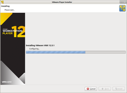
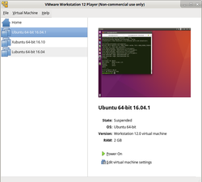
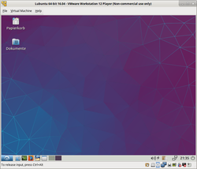
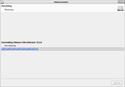

VMware Player
Dieser Artikel wurde für die folgenden Ubuntu-Versionen getestet:
Ubuntu 16.04 Xenial Xerus
Ubuntu 14.04 Trusty Tahr
Zum Verständnis dieses Artikels sind folgende Seiten hilfreich:
In diesem Artikel geht es um die Installation und Benutzung des VMware Players, einer Software zur Virtualisierung. Einen Einstieg in das Thema und weiterführende Informationen gibt es im Artikel zur Virtualisierung. Ältere Versionen des VMware Players konnten virtuelle Maschinen nur ausführen, das Erstellen und Konfigurieren war den größeren Geschwistern VMware Server 2 und VMware Workstation vorbehalten. Ab Version 3 können mit dem Player auch eigene VMs erstellt werden. Zusätzlich kann man sich über das Internet fertige VM herunterladen bzw. zusammenstellen lassen.
Installation¶
|  |
| Grafischer Installationsassistent |
Aktuelle Versionen von VMware Player  kann man sich gegen Registrierung kostenlos beim Hersteller herunterladen
kann man sich gegen Registrierung kostenlos beim Hersteller herunterladen  .
.
Anzumerken wäre noch, dass bei manchen der Download über die Schaltfläche "Start Download Manager" nicht funktioniert bzw. nur eine ca. 20 KiB große Datei herunterlädt. Ist dies der Fall, sollte man "Manually Download" anklicken. Die Datei sollte ca. 137 MiB groß sein.
Nun öffnet man ein Terminal [3], wechselt in das Verzeichnis, indem die heruntergeladene Datei liegt, und startet die Installation:
cd /Pfad/zum/heruntergeladenen/Bundle/ sudo sh VMware-Player-12.5.1-yyy.x86_64.bundle
Daraufhin startet eine grafische Installation, die den Rest erledigt.
32- und 64-Bit-Versionen¶
Die Software wird als Bundle angeboten, sowohl für 32-Bit als auch für 64-Bit-Betriebssysteme. Für eine Installation unter Ubuntu wird das Bundle für die jeweilige Version des Betriebssystems benötigt.
Ab Version 4 setzt der VMware Player (unabhängig von der Version des Betriebsystems) eine 64-Bit Prozessorarchitektur voraus.
Auf älteren Rechnern mit 32-Bit Architektur lassen sich ältere Versionen installieren. Gegebenen Falls müssen unter aktuelleren Ubuntu-Versionen zum Kompilieren der Kernel-Module zusätzlich ältere Bibliotheken (z.B. GCC) installiert werden.
Benutzung¶
Hier wird die Benutzung des VMware Players in Version 3.1.x beschrieben. Die Bedienung anderer Versionen kann gegebenenfalls abweichen.
Player starten¶
Bei der Installation wurde ein Startmenüeintrag angelegt. Dieser befindet sich im GNOME-Menü unter
"Anwendungen -> Systemwerkzeuge -> VMware Player"
Alternativ kann das Programm mit dem Befehl vmplayer gestartet werden [4].
Bei aktuellen Kerneln kann es geschehen, dass VMWare Player nicht startet. Es wird dann der "Kernel Module Updater" ausgeführt, wobei unter Umständen manche Kernelmodule nicht erstellt werden können. Was in diesem Fall zu tun ist, wird im Abschnitt Update beschrieben.
|  |
| Auswahl Betriebssysteme |
VM starten¶
Die Bedienoberfläche bietet nun folgende Möglichkeiten an:
"Create a New Virtual Machine" - Anlegen einer neuen VM.
"Open an existing Virtual Machine" - Um eine bestehende VM zu starten, muss man die zugehörige .vmx-Datei öffnen. Danach wird die VM sofort gestartet.
Über das "File"-Menü besteht die Möglichkeit den VMWare-Player zu konfigurieren sowie neue vorkonfigurierte VMs herunterzuladen und zu starten:
"Download a Virtual Appliance" - Öffnet diese Webseite
des Herstellers, auf der fertig vorkonfigurierte VM angeboten werden, die man herunterladen und starten kann.
Bereits zuvor angelegte und gestartete VMs werden im linken Teil des Startfensters des VMWare-Players aufgelistet und lassen sich darüber sofort starten.
Hinweis:
|  |
| Betriebssystem gestartet |
Player bedienen¶
Im Gegensatz zu seinen größeren Geschwistern VMware Server und VMware Workstation lässt der Player nur wenige Änderungen an der virtuellen Maschine zu, genau so viel, wie zum Bedienen dieser nötig sind. Folgende Menüpunkte stehen bei einer gestarteten VM zur Auswahl:
VMware Player:
"Help" F1 - Öffnet Browser mit englischer Hilfe zum Programm
"About" - Öffnet Informationen zur Software und zur VM
"Enter ACE Client License" - Bei gewerblicher Nutzung kann man hier den gekauften Lizenzschlüssel eingeben
"Console" - Normaler Modus, d.h. die VM befindet sich komplett in einem Fenster des Wirtdesktops
"Unity" - Nahtlosmodus, d.h. der Desktop der VM integriert sich nahtlos in den Wirtdesktop. Das setzt die Gasterweiterungen (VMware Tools) voraus.
"Einstellungen" - Zum Einstellen des Verhaltens bei Schließen des VM-Fensters und ob das Programm nach Aktualisierungen suchen soll
"Shared Folders" - Zum Einstellen der gemeinsamen Ordner von VM und Wirt. Setzt die Gasterweiterungen (VMware Tools) voraus, kann aber die Sicherheit des Wirts beeinträchtigen.
"Troubleshoot"
"Change Memory Allocation" - Hier kann man die Größe des Arbeitsspeichers festlegen, der der VM zur Verfügung gestellt werden soll
"Message Log" - Anzeigen der Meldungen über die VM, kann hilfreich bei Fehlern und Problemen sein
"Reset" Strg + R - Sofortiger Neustart der VM
"Suspend and Quit" Strg + Z - Zustand der VM sichern und Player schließen (ähnlich einem Ruhezustand), wird beim nächsten Start wieder hergestellt
"Power Off and Quit" Strg + E - VM ohne Herunterfahren ausschalten und Player schließen
"Suspend and Quit" Strg + Q - Zustand der VM sichern und Player schließen (ähnlich einem Ruhezustand), wird beim nächsten Start wieder hergestellt
Devices:
"CD/DVD (IDE)" - Virtuelles CD/DVD-Laufwerk, kann mit physischem Laufwerk oder mit CD-Abbild (ISO) verbunden ("Connect") oder getrennt/ausgeworfen ("Disconnect") werden
"Network Adapter"
"Disconnect" - Virtuelle Netzwerkverbindung kappen
"Bridged" - VM erscheint wie physisch unabhängiger Rechner im Netzwerk des Wirts
"NAT" - Virtuelle Netzwerkverbindung über NAT, d.h. Wirt und Gast kommunizieren in einem eigenen Netzwerk miteinander
"Host only" - VM kann ausschließlich mit dem Wirt kommunizieren
"Sound Card" - Ausgabe der virtuellen Soundkarte auf ein Soundgerät des Wirts umleiten ("Connect") oder abschalten ("Disconnect")
"USB" - Hat man bestimmte USB-Geräte am Wirt angesteckt, so kann man diese an das virtuelle System weiterleiten. Sie stehen dann aber dem Wirt erst wieder zur Verfügung, wenn sie von der VM getrennt wurden.
Kleine Symbole in der unteren rechten Ecke zeigen den Status der VM an, welche Laufwerke benutzt werden, Status der Sound- und Netzwerkkarte und eventuelle Statusnachrichten.
Hinweis:
In der unteren rechten Ecke wird angezeigt, welche Tastenkombinationen benötigt werden, um Maus und Tastatur zu einzufangen, d.h. der VM zur Verfügung zu stellen oder sie aus der VM zu lösen bzw. wieder dem Wirt zur Verfügung zu stellen. Die Einstellung wird bei der Konfiguration der VM festgelegt und kann mit dem Player nicht geändert werden. Die Tastenkombinationen können je nach VM anders sein. Die Standardeinstellungen sind Strg + G zum Einfangen und Strg + Alt zum Lösen.
Gasterweiterungen¶
Die Gasterweiterungen (VMware Tools) ermöglichen etwa das Verwenden gemeinsamer Ordner zwischen VM und Wirt, den Nahtlosmodus und das variable Einstellen der Bildschirmauflösung. Sie sind auf einem CD-Abbild (ISO) enthalten. Nähere Informationen erhält man im Artikel VMware/Tools.
VM beenden¶
Die VM kann beendet werden, indem man das virtuelle Betriebssystem herunter fährt oder in den Ruhezustand versetzt sowie wenn man den "Suspend" oder "Power Off" des Players nutzt. Wird die VM beendet, schließt sich auch der Player komplett.
No 3D Support is available from the host¶
Insbesondere bei der Verwendung von Intel-Grafik kann es vorkommen, dass trotz funktionierender 3d-Beschleunigung beim Start des Gastsystems die Meldung "No 3D Support is available from the host" erscheint. Abhilfe versprechen folgende Maßnahmen:
Eintragen von mks.enable3d="TRUE" und mks.gl.allowBlacklistedDrivers="TRUE" im vmx-File
Installation der Texture compression library for Mesa (libtxc-dxtn-s2tc0)
Wenn das noch nicht hilft, kann man es noch mit den Updated and Optimized Open Graphics Drivers aus dem ppa:oibaf/graphics-drivers versuchen.
Update¶
Nach einem Update des Kernels des Wirtsystems werden beim ersten Starten des VMWare-Players die Kernelmodule automatisch neu erstellt, die notwendig sind, um den VMWare-Player zu benutzen. Falls das nicht automatisch passieren sollte, kann man die benötigten Kernelmodule mit folgendem Terminalbefehl auch manuell updaten:
sudo vmware-modconfig --console --install-all
Hinweis:
Bei aktuellen Kerneln kann es vorkommen, dass der Befehl vmware-modconfig fehlschlägt. Es ist bekannt, dass der VM-Player nicht immer die aktuellsten Kernel unterstützt. Welche Kernelversion man selbst derzeit verwendet, kann man mit dem Befehl
1 | uname -r |
herausfinden. Alternativ kann man in dieser Liste der Ubuntu Veröffentlichungen nachsehen.
Kernel 3.2.0-x bis 3.4.0-x¶
Für Kernel 3.2.0-x gibt es einen Patch. Dieser kann vom Weltall's Blog (Stefano Angeleri) heruntergeladen werden: Fix für Kernel 3.2 und 3.3  . Der Patch ist für folgende Versionen verfügbar:
. Der Patch ist für folgende Versionen verfügbar:
Kernel 3.2.0 - x
VM-Workstation 8.0.2
VM-Player 4.0.2
Sollte eine höhere Workstation- oder Player-Version verwendet werden, so kann das Patchskript patch-modules_3.2.0.sh geöffnet [5] und im Header entsprechend das Versionslevel nach oben gesetzt werden.
1 2 3 4 5 6 7 8 9 | #! /bin/bash # VMWare Workstation/Player _host kernel modules_ patcher v0.6.2 by ©2010 Artem S. Tashkinov # Tailored and fixed vmblock patching for the 2.6.39 patch by Stefano Angeleri (weltall) # Use at your own risk. # fpatch=vmware3.2.0.patch vmreqver=8.0.2 # plreqver=4.0.2 # original plreqver=4.0.4 # changed to version 4.0.4 |
Im Weltall's Blog ist auch ein Patch für den Kernel 3.4.0 vorhanden: Fix für Kernel 3.4.0
Kernel 3.7.0¶
Beim Kernel 3.7.0 reicht es die version.h in einem anderen Ordnerpfad zu verlinken
ln -s /usr/src/linux-headers-3.7.0-7-generic/include/generated/uapi/linux/version.h /usr/src/linux-headers-3.7.0-7-generic/include/linux/version.h
Danach startet man den vmware-Player neu. Nun sollte er sich einrichten und danach wie gewohnt funktionieren.
Ab Kernel 3.19.0¶
Für Kernelversionen ab 3.19 (Ubuntu 15.04) gibt es eine Anleitung im Arch Linux Wiki .
|  |
| VMware Player deinstallieren |
Deinstallation¶
Die Deinstallation wird mittels Administrationsrechten in einem Terminal [3] gestartet:
sudo vmware-installer -u vmware-player
Bei Versionen >=2.5 startet eine grafische Deinstallationsroutine.
Links¶
VMware_Player - Wikipedia
http://www.vmware.com/de/
- Webseite des Herstellershttp://vmware-forum.de/
- Deutsches VMware-Forum http://www.vmware.com/appliances/
- Fertige VMs herunterladenhttp://easyvmx.com/
- VMs erstellen und herunterladen
- Erstellt mit Inyoka
-
 2004 – 2017 ubuntuusers.de • Einige Rechte vorbehalten
2004 – 2017 ubuntuusers.de • Einige Rechte vorbehalten
Lizenz • Kontakt • Datenschutz • Impressum • Serverstatus -
Serverhousing gespendet von